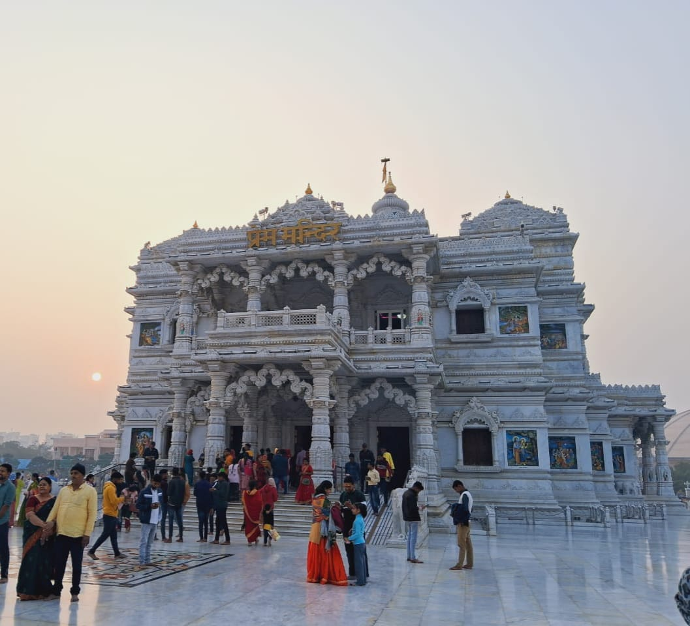

- 
प्रेम मंदिर
प्रेम मंदिर, उत्तर प्रदेश के मथुरा ज़िले के वृंदावन में बना एक हिंदू मंदिर है. यह मंदिर, भगवान कृष्ण और राधा को समर्पित है. इसे जगद्गुरु कृपालु महाराज ने बनवाया था. मंदिर का निर्माण 2001 में शुरू हुआ था और 2012 में यह बनकर तैयार हुआ. मंदिर के निर्माण में इटली के पत्थर का इस्तेमाल किया गया है. यह मंदिर 54 एकड़ में फैला हुआ है और इसकी ऊंचाई 125 फ़ीट है.
प्रेम मंदिर में राधा-कृष्ण के प्रेम के कई प्रसंगों को दर्शाया गया है. कहते हैं कि राधा-कृष्ण के दर्शन से श्रद्धालुओं को सुकून मिलता है. मंदिर में फव्वारे, श्रीकृष्ण और राधा की मनोहर झांकियां, श्रीगोवर्धन धारणलीला, कालिया नाग दमनलीला, झूलन लीलाएं बहुत ही खूबसूरत ढंग से दर्शाई गई हैं. प्रेम मंदिर, जगद्गुरु कृपालु परिषद द्वारा बनाए रखा जाता है. यह परिषद एक अंतरराष्ट्रीय गैर-लाभकारी, शैक्षणिक, आध्यात्मिक, धर्मार्थ ट्रस्ट है
यह परिसर वृन्दावन के बाहरी इलाके में 22 हेक्टेयर (55 एकड़) की साइट पर है । यह राधा कृष्ण और सीता राम को समर्पित है । पहले स्तर पर राधा कृष्ण और दूसरे स्तर पर सीता राम हैं। मुख्य मंदिर की पूरी दीवार पर श्री कृष्ण और रसिक संतों की विभिन्न लीलाओं का चित्रण किया गया है।
- प्रेम मंदिर का निर्माण पूरी तरह से इटालियन संगमरमर से किया गया है। ध्वज सहित मंदिर का कुल आयाम 38 मीटर (125 फीट) ऊंचा, 58 मीटर (190 फीट) लंबा है और 39 मीटर (128 फीट) चौड़ा ऊंचा मंच दो मंजिला सफेद स्मारक की सीट के रूप में कार्य करता है।
- इस मंदिर में फव्वारे, राधा-कृष्ण की मनोहर झांकियां, श्री गोवर्धन लीला, कालिया नाग दमन लीला, और झूलन लीला की झांकियां हैं. इस मंदिर में लाइटिंग और लाइट शो देखने लायक है.
- श्रीकृष्ण और उनके अनुयायियों के आंकड़े भगवान के अस्तित्व के आस-पास महत्वपूर्ण घटनाओं को दर्शाते हुए मुख्य मंदिर को कवर करते हैं।